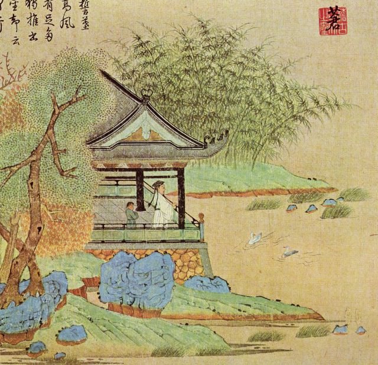

Kaligrafia chińska
Menu
O mnie
Kontakt
Sztuka chińska
Historia kaligrafii chińskiej

Chiny
Ciekawe strony o Chinach:
kompendium wiedzy o Chinach
Kultura chińska
Zapiski z Państwa Środka
Ciekawostki o Chinach:
kompendium wiedzy o Chinach
Kultura chińska
Zapiski z Państwa Środka
Sklepy oferujące narzędzia do nauki kaligrafii chińskiej:
Art Equipment
Sklep plastyczny
Artysta
Lekcje kaligrafii chińskiej
Ucz się z nami
Słownik polsko-chiński
Tłumacz